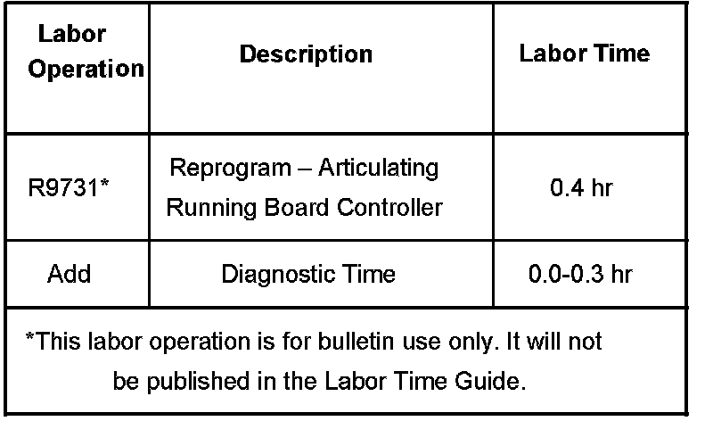

Body - Power Running Boards/Assist Steps Inoperative
Bulletin No.: 07-08-61-004Date: March 12, 2007
TECHNICAL
Subject:
Articulating Running Boards (Assist Steps) Inoperative (Reprogram Assist Step Controller)
Models:
2007 Cadillac Escalade, Escalade ESV, Escalade EXT
2007 Chevrolet Avalanche, Suburban, Tahoe
2007 GMC Yukon, Yukon XL, Yukon Denali
Built Between November 15, 2006 and January 16, 2007
(with Assist Step Controller P/N 25822021)
Condition
Some customers may comment that the power running boards/assist steps on the vehicle operate intermittently at times or are inoperative. The running boards may stop in mid-travel and remain there until the next key cycle. DTCs B051C22 or B051D22 may or may not have set.
Cause
This condition may be caused by the software in the running board/assist step controller.
Correction
Do not reprogram assist step controller P/Ns 25782667 and 25852622. These modules will not exhibit the condition.
Reprogram the running board/assist step controller, P/N 25822021, with the new calibration.
Use the Pass-Thru method for programming this controller.
Reprogram the Assist Step Controller. Refer to Service Programming System (SPS) in SI for programming information, if required.
Warranty Information

For vehicles repaired under warranty, use the table.

Disclaimer